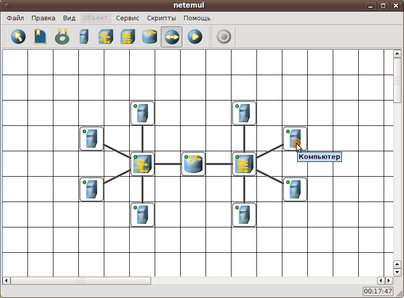
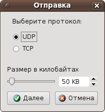
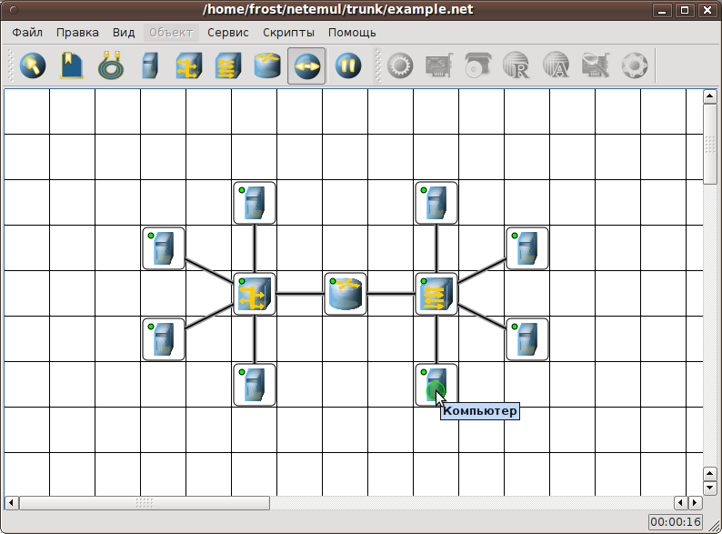
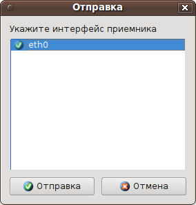
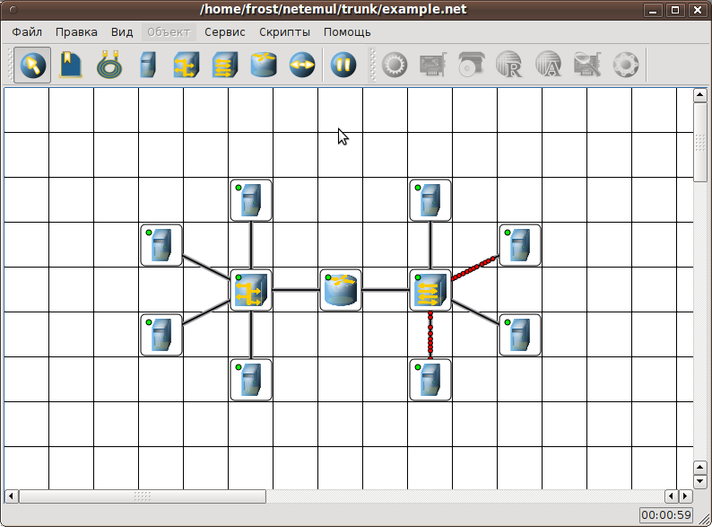

| Руководство NetEmul | ||
|---|---|---|
| Пред. | ||
В предыдущем разделе мы настроили сеть. И сейчас можем посмотреть насколько правильно она функционирует, увидеть работу различных сетевых устройств и поэксперементировать с сетью.
Для того, чтобы отправить пакеты, выберите на панели инструментов значок
При наведении мыши на рабочую область Вы увидите оранжевый кружок, это значит, что надо указать от какого компьютера данные будут отправлены. Мы пошлем данные от этого компьютера:
Щелкните на выбранном компьютере (остальные устройства могут отправлять только служебную информацию без участия пользователя). У Вас появилось диалоговое окно отправки данных

Здесь мы не будем ничего менять, оставим предложенные параметры. Вы уже можете начинать экспереметировать и выставить свои значения. Затем нажимаем кноку Далее. Теперь появился зеленые кружок, т.е. Вам надо выбрать получателя.

Опять щелкаем по выбранному компьютеру. Появляется диалог.

В этом диалоговом окне нужно указать интерфейс, на который будут отправляться данные. Так как у данного компьютера один адаптер, то на него мы и отправим пакеты. Далее нажимаем кнопку Отправка и наслаждаемся видом бегущих кадров.

Как Вы заметили, прежде чем побежали эти красные пакеты, компьютеры отправили еще что-то. С тем, что же отправили компьютеры, а точнее, какую информацию содержали кадры, разработчики предлагают разобраться самостоятельно.
Но мы можем дать подсказку... У каждого устройства в контекстном меню есть пункт "Показать журнал", можно открыть этот журнал и увидеть всю необходимую информацию о пакете, пришедшем (или отправленном), и его содержимое.
Теперь Вы обладаете достаточной информацией, чтобы самостоятельно ответить на поставленный вопрос. А для получения дополнительной информации можете обратиться к учебникам.
Здесь очень кратко и сжато мы объяснили все необходимое для дальнейшей работы с программой. Обладая этими данными и толикой любознательности (или любопытства) можно продолжить изучение как возможностей программы, так и дисциплин, связанных с компьютерными сетями.
Желаем успехов!
Коллектив разработчиков.
| Пред. | Начало | |
| На уровень выше |